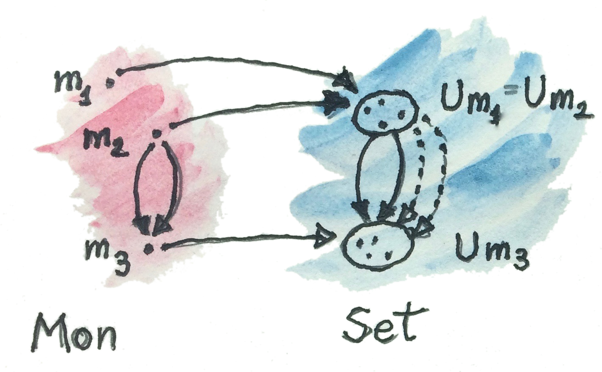
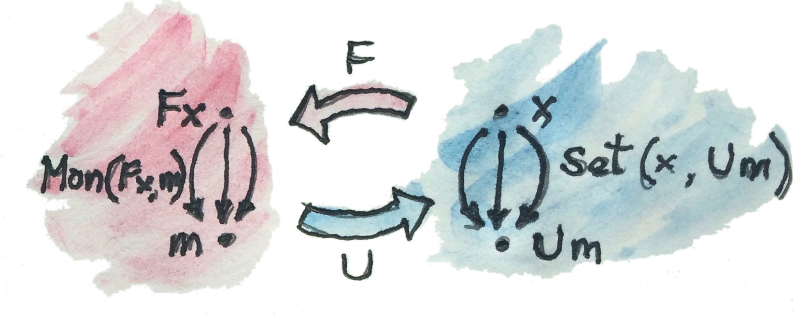
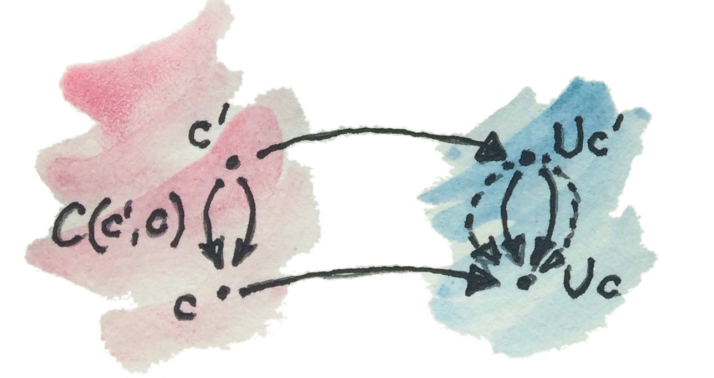
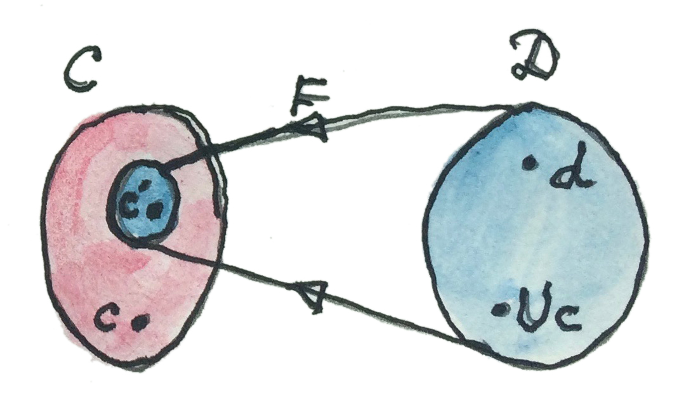

自由构造是伴随的一项强大应用。自由函子（free functor）定义为遗忘函子（forgetful functor）的左伴随。遗忘函子通常相当简单，它会忘掉某些结构。例如，许多有趣范畴都建立在集合之上。但抽象了这些集合的范畴对象没有内部结构——它们没有元素。尽管如此，这些对象常保留着集合的记忆，因为存在从给定范畴 C 到 Set 的映射——函子。与 C 中某对象对应的集合，称为它的底层集合（underlying set）。
幺半群就是拥有底层集合——元素集合——的对象。从幺半群范畴 Mon 到集合范畴 Set 有一个遗忘函子 U，把幺半群映射到底层集合；它也把幺半群态射（同态）映射成集合之间的函数。
我喜欢把 Mon 想成具有双重人格。一方面，它是一堆带乘法与单位元的集合；另一方面，它是一个由无特征对象组成的范畴，对象唯一的结构编码在它们之间的态射里。每个保持乘法与单位元的集合函数，都会在 Mon 中产生一支态射。
需要记住：
- 可能有许多幺半群映射到同一个集合；
- 幺半群态射比其底层集合之间的函数更少，最多也只能一样多。
遗忘函子 U 的左伴随 F 是自由函子，它从生成元集合构造自由幺半群。这个伴随来自前面讨论过的自由幺半群泛构造。

用 Hom 集写，这个伴随是：
这个在 x、m 上自然的同构告诉我们：
- 对自由幺半群 Fx 与任意幺半群 m 之间的每个同态，都有一个唯一函数，把生成元集合 x 嵌入 m 的底层集合；它属于 Set(x,Um)。
- 对每个把 x 嵌入某个 m 底层集合的函数，都存在唯一幺半群态射，从 x 生成的自由幺半群到 m。（这就是泛构造中称为 h 的态射。）

直觉上，Fx 是能以 x 为基础构造的“最大”幺半群。若能查看幺半群内部，会看到 Mon(Fx,m) 中任意态射都把这个自由幺半群嵌入另一个幺半群 m，过程中可能认同某些元素。特别是，它把 Fx 的生成元（即 x 的元素）嵌入 m。伴随说明：右边 Set(x,Um) 中函数给出的 x 之嵌入，会唯一决定左边的幺半群嵌入，反之亦然。
Haskell 中，列表数据结构是自由幺半群（但有一些注意事项，参见 Dan Doel 的博客文章）。列表类型 [a] 是以类型 a 表示生成元集合的自由幺半群。例如，类型 [Char] 包含单位元——空列表 []——以及 ['a']、['b'] 之类的单元素列表——自由幺半群的生成元。其余元素由“乘法”生成；这里两个列表的积只是把一个追加到另一个。追加满足结合律并有单位元（中性元素就是空列表）。由 Char 生成的自由幺半群，就是由 Char 中字符组成的所有字符串集合，Haskell 称之为 String：
type String = [Char]（type 定义类型同义词，也就是给已有类型另起一个名字。）
另一个有趣例子是只有一个生成元的自由幺半群，即单元列表类型 [()]。其元素为 []、[()]、[(),()] 等。每个列表都可由一个自然数——长度——描述；单元列表不编码其他信息。追加两个这样的列表，会得到长度为二者长度之和的新列表。不难看出，类型 [()] 同构于自然数的加法幺半群（包含零）。下面两个互逆函数见证这个同构：
toNat :: [()] -> Int
toNat = length
toLst :: Int -> [()]
toLst n = replicate n ()为简单起见，这里用了 Int 而非 Natural，但思想相同。函数 replicate 创建长度为 n、由给定值预填充的列表——这里填充单元值。
一些直觉
下面是一些挥手式论证。这种论证远非严格，但有助于形成直觉。
要理解自由/遗忘伴随，可以记住函子与函数本质上都有损。函子可能压缩多个对象与态射，函数可能把一个集合的多个元素聚到一起；它们的像也可能只覆盖陪域的一部分。
Set 中一个“普通”Hom 集会包含各种各样的函数：从损失最少的函数开始（例如单射，或者可能是同构），直到把整个定义域压成一个元素的常函数（如果陪域中有元素）。
我也倾向于把任意范畴中的态射想成有损的。这只是一种心智模型，但很有用，尤其是在思考伴随——特别是一边范畴为 Set 的伴随——时。
形式上，只能把态射分成可逆的（同构）与不可逆的；后者可被想象成有损。还有单态射（monomorphism）与满态射（epimorphism），它们推广了单射（不压缩）与满射（覆盖整个陪域）的思想；但一支态射可能既是单态射又是满态射，却仍不可逆。
在 Free ⊣ Forgetful 伴随中，左边是约束更多的范畴 C，右边是约束更少的范畴 D。C 中态射“更少”，因为必须保持额外结构；对 Mon，它们必须保持乘法与单位元。D 中态射无需保持那么多结构，因此“更多”。
把遗忘函子 U 应用于 C 中对象 c 时，可以想成揭示 c 的“内部结构”。事实上，若 D 是 Set，就把 U 看成在定义 c 的内部结构——底层集合。（在任意范畴中，除了对象与其他对象的连接，我们无法谈论对象内部；但这里本来就是挥手式直觉。）
若用 U 映射两个对象 c′、c，通常预期 Hom 集 C(c′,c) 的像只覆盖 D(Uc′,Uc) 的一个子集。因为 C(c′,c) 中态射必须保持额外结构，而 D(Uc′,Uc) 中态射无需如此。

但伴随被定义为特定 Hom 集之间的同构，所以选择 c′ 时必须非常挑剔。在伴随中，c′ 不是从 C 的任意地方选取，而来自自由函子 F（大概更小的）像：
F 的像因此必须由这样的对象组成：它们有大量态射指向任意 c。事实上，从 Fd 到 c 的保持结构态射，必须与从 d 到 Uc 的不保持结构态射一样多。这意味着 F 的像必须由本质上没有结构的对象构成（这样态射就没有结构需要保持）。这种“无结构”对象称为自由对象（free object）。

在幺半群例子中，自由幺半群除单位律与结合律生成的结构外，没有其他结构。除此之外，每次乘法都会产生全新元素。
在自由幺半群中，2*3 不是 6，而是新元素 [2,3]。由于 [2,3] 与 6 没有被认同，从这个自由幺半群到其他幺半群 m 的态射可以分别映射它们。但也可以把 [2,3] 与 6（它们的积）都映射到 m 的同一元素；或者在加法幺半群中认同 [2,3] 与 5（它们的和），等等。不同认同会得到不同幺半群。
这产生另一个有趣直觉：自由幺半群不执行幺半群运算，而是累积传给运算的参数。它不把 2、3 相乘，而是把 2、3 记在列表里。好处是无需预先指定使用什么幺半群运算。可以不断累积参数，最后才对结果应用运算符；到那时再选择运算符——可以求和、求积、做模 2 加法等。自由幺半群把表达式的创建与求值分离开。讨论代数时还会见到这个思想。
这个直觉可推广到其他更复杂的自由构造。例如，可以在求值前累积整棵表达式树。这样做的好处是，可以变换树，让求值更快或占用更少内存。例如矩阵演算的实现会采用这种办法，因为急切求值会为中间结果分配大量临时数组。
习题
- 考虑以单元素集合为生成元的自由幺半群。证明：从这个自由幺半群到任意幺半群 m 的态射，与从单元素集合到 m 底层集合的函数一一对应。
点击展开参考答案
从单元素集合
{*}到Um的函数，只需选择一个元素x∈m。单生成元自由幺半群同构于自然数加法幺半群；选择x后，唯一的幺半群同态把长度n的列表映射为xⁿ（零次幂是单位元）。反过来，任意同态都由生成元的像x=h([*])完全决定。两个构造互逆，因此建立一一对应。